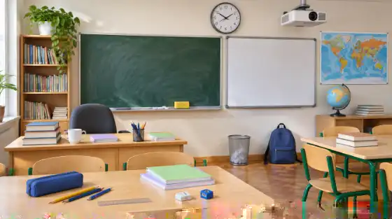

Im Klassenzimmer gibt es viel zu finden. Findet die Dinge und sagt genau, wo sie sind — danach eine Runde Tabu.
🔍 Suchbild📍 Wo? & Wohin?🔤 Tabu🗣️ Frei sprechen
Niveau wählen
Was gibt es alles zu sehen?
Schaut genau hin! Beschreibt reihum die Lage der Dinge so genau wie möglich.

🔍 Such-Spiel: Eine Person nennt etwas aus der Liste — die anderen suchen es im Bild und beschreiben im ganzen Satz, wo es ist. Wer es zuerst richtig beschreibt, ist als Nächstes dran.
Findet diese Sachen
Tippt eine Karte an, wenn ihr das Ding im Bild gefunden und die Lage beschrieben habt.
🟦 der🟩 das🟥 die
📋 Die ganze Wortschatzliste
Alle Wörter zum Thema — für alle gleich. Das ist euer Wortvorrat für Tabu, Rate-Spiel und die Präpositionen.
die Tafel
die Kreide
das Pult
der Tisch
der Stuhl
die Lehrerin
das Buch
das Heft
der Stift
das Fenster
die Uhr
das Whiteboard
der Schwamm
der Bleistift
das Lineal
der Rucksack
der Globus
die Landkarte
das Regal
die Pflanze
das Mäppchen
der Papierkorb
der Beamer
der Becher
der Radiergummi
der Spitzer
🎁 „Ich sehe etwas, das …"
Eine Person tippt auf „Neues Wort", sieht Bild + Wort und beschreibt nur mit Präpositionen, wo es ist — die anderen raten!
🤫 Dein geheimes Wort
Bereit?
Nur die beschreibende Person schaut · beschreibe die Lage, sag das Wort nicht!
🗣️ So beschreibst du: „Es befindet sich …" · „Es liegt / steht / hängt …" + Präposition + Dativ. Jeder Klick gibt ein neues, gemischtes Wort aus deinem gewählten Niveau (🟨 A2/B1 · 🟦 B1/B2 · 🟩 B2/C1).
📍 Präpositionen
Beschreibt die Lage der Dinge — die Übung passt sich eurem Niveau an.
Wo? → Dativ
Einfache Wo?-Fragen. Antwortet im ganzen Satz zum Bild.
auf
„Das Buch liegt auf dem Tisch.
in
„Die Stifte sind in dem Mäppchen.
neben
„Der Stuhl steht neben dem Tisch.
unter
„Der Rucksack liegt unter dem Tisch.
vor
„Die Lehrerin steht vor der Tafel.
an
„Die Uhr hängt an der Wand.
🧠 Dativ-Artikel: der → dem · das → dem · die → der.
Wo? → Dativ
Frage Wo? (Lage) → Wechselpräposition + Dativ. Bildet zu jeder einen Satz zum Bild.
in
„Die Bücher stehen im Regal.
an
„Die Landkarte hängt an der Wand.
auf
„Das Heft liegt auf dem Tisch.
unter
„Der Rucksack steht unter dem Tisch.
über
„Der Beamer hängt über den Tischen.
neben
„Der Globus steht neben den Büchern.
vor
„Die Lehrerin steht vor der Tafel.
hinter
„Die Tafel ist hinter dem Pult.
zwischen
„Das Mäppchen liegt zwischen dem Buch und dem Lineal.
🧠 Dativ-Artikel: der → dem · das → dem · die → der · Plural → den (+n).
Wohin? → Akkusativ
Etwas bewegt sich — Frage Wohin? (Richtung) → Akkusativ.
in + Akk.
„Steck die Stifte in das Mäppchen.
auf + Akk.
„Leg das Buch auf den Tisch.
an + Akk.
„Häng die Landkarte an die Wand.
🧠 Akkusativ-Artikel: der → den · das → das · die → die · Plural → die. Merksatz: Wo? = Dativ · Wohin? = Akkusativ.
Präzise beschreiben
Beschreibt die genaue Lage mit anspruchsvollen Präpositionen — gern mehrere Angaben in einem Satz.
oberhalb + Gen.
„Oberhalb der Tafel hängt eine Uhr.
innerhalb + Gen.
„Innerhalb des Regals stehen zahlreiche Bücher.
inmitten + Gen.
„Inmitten des Klassenzimmers steht das Pult.
gegenüber + Dat.
„Gegenüber dem Fenster hängt die Landkarte.
entlang + Gen.
„Entlang der Wand verläuft ein langes Regal.
mehrteilig
„Rechts neben dem Beamer, direkt über dem Regal, hängt eine Uhr.
🧠 Genitiv-Präpositionen: oberhalb / innerhalb / inmitten / entlang + Genitiv (des / der). gegenüber steht mit Dativ. Kombiniert sie für präzise Beschreibungen.
🔤 Tabu
Erkläre das Wort oben — aber ohne die verbotenen Wörter! Jeder Klick gibt ein neues, gemischtes Wort aus deinem gewählten Niveau (🟨 A2/B1 · 🟦 B1/B2 · 🟩 B2/C1).
Erkläre dieses Wort
Bereit?
🚫 Diese Wörter sind tabu
Tippe auf „Neue Karte"
⏱️ Spielidee: 60 Sekunden pro Runde. Für jedes erratene Wort einen Punkt. Verbotenes Wort benutzt → Karte futsch. Zwei Teams!
🗣️ Frei sprechen
Sprecht frei — nutzt den Wortschatz aus dem Bild. Die Fragen passen sich eurem Niveau an.
A2/B1
Bild
Was siehst du auf dem Bild? Nenne fünf Dinge.
Schultasche
Was ist in deiner Schultasche?
Farben
Welche Farben haben die Dinge im Klassenzimmer?
Alltag
Was brauchst du jeden Tag für die Schule? Warum?
B1/B2
Schulzeit
Wie war deine Schulzeit? Erzähl davon.
Lieblingsfach
Was war dein Lieblingsfach — und warum?
Lernen
Wie lernst du am besten — allein oder in der Gruppe?
Diskussion
Noten in der Schule — sinnvoll oder nicht?
Frage-Runde
Stell deinem Partner 3 Fragen zu seiner Schulzeit.
Geschichte
Erfinde eine Geschichte: ein ungewöhnlicher Tag in der Schule.
B2/C1
Diskussion
Machen Noten Schüler besser oder nur ängstlicher? Begründe deine Meinung.
Zukunft
Wie sieht die Schule in zwanzig Jahren aus? Was verschwindet, was bleibt?
Bildung
Sollten Handys in der Schule verboten sein? Wäge Vor- und Nachteile ab.
Monolog
Beschreibe zwei Minuten lang das Bild so genau, dass dein Partner es zeichnen könnte.
🔑 Redemittel: „Ganz vorne / hinten sieht man …", „Direkt daneben …", „Links / rechts von … befindet sich …", „Im Vordergrund / im Hintergrund …"
🏆 Das große Quiz
Mehrere Runden rund um die Schule: Wortschatz, Artikel, Wo? & Wohin? und Schulalltag. Pro Frage gibt es genau eine richtige Antwort — das Quiz passt sich eurem Niveau an.
Runde 1 · Frage 10 von 6
🏅 Als Wettkampf: Zwei Teams, abwechselnd. Wer die richtige Antwort hat, muss zusätzlich einen eigenen Satz mit dem Wort bilden — erst dann gibt es den Punkt.
 die Tafel
die Tafel die Kreide
die Kreide das Pult
das Pult der Tisch
der Tisch der Stuhl
der Stuhl die Lehrerin
die Lehrerin das Buch
das Buch das Heft
das Heft der Stift
der Stift das Fenster
das Fenster die Uhr
die Uhr das Whiteboard
das Whiteboard der Schwamm
der Schwamm der Bleistift
der Bleistift das Lineal
das Lineal der Rucksack
der Rucksack der Globus
der Globus die Landkarte
die Landkarte das Regal
das Regal die Pflanze
die Pflanze das Mäppchen
das Mäppchen der Papierkorb
der Papierkorb der Beamer
der Beamer der Becher
der Becher der Radiergummi
der Radiergummi der Spitzer
der Spitzer